Hectolitre, Brussels - May 2020
DOOR TO THE RIVER: a conversation between Mladen Bundalo and Harry Chapman based on a randomly generated sample of images from the latter’s work, taken between 2009 and 2020, illustrated by photographs of current work in progress.
All photographs by Harry Chapman
Harry Chapman: Stop whenever you want.
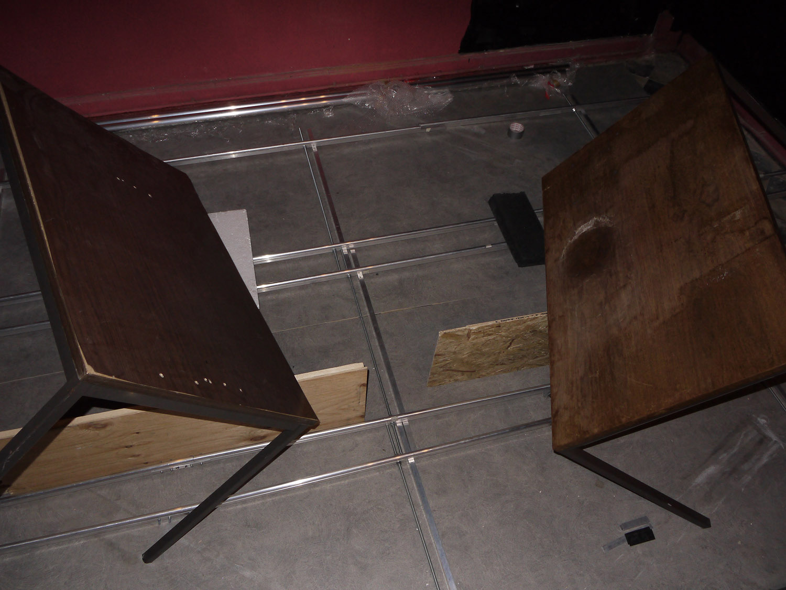
HC: So this is a photograph from the window of the flat we were staying in, in Frankfurt, when it had snowed, and the kitchen window looked out onto the internal courtyard of these buildings. I was always quite interested in balconies because they have this demonstrative quality, in the sense that they’re a leisure thing, or outside of usual exchange.
Mladen Bundalo: They’re a space in between also. And there are many times they are actually like a showroom for your privacy, of what overflows the living room.
HC: They’re public but also private.
MB: What I notice first, why I stopped, even the scene is something that I… It’s not in a line with other photos of the work – so it’s a living scene of a real…
HC: It’s not deliberate. I haven’t done anything.
MB: Yes.
HC: The only deliberate act is taking the photograph.
MB: But I immediately noticed this strong… This feeling of fences and lines repeating…
HC: Maybe the decision to take the photograph is because of these geometries.
MB: Yes.
HC: That this wall is without depth – even though we know it extends back because of the ground, we can’t see the edge of this building. So there’s a sort of foreshortening.
MB: And there is… What I feel also, in your work, there is this strong notion between inside and outside, somehow. The videos recorded are all in interior, but the absence of human presence makes it look like tectonic movements somewhere outside completely. Have you noticed this?
HC: There’s a sort of paradox in that the movement in the videos requires a degree of built environment in order to register – in order for the movement to register. So with those score-based videos, were I to do them in the middle of a field for example, there would be no tangible movement, because there’s no reciprocal material.
MB: I mention this because of this notion of balcony – as a function…
HC: As a sort of liminal space.
MB: Yes.
HC: There’s this thing of course that the relation between two images doesn’t have a space – in the sense of photo-montage or even there are some buildings. There’s this church Sainte-Bernadette du Banlay by Claude Parent and Paul Virilio, where there are two spaces and they have a vertical caesura between them; they’re both indexed separately by the pews of the church. And of course the space of their relation is no space – it’s not a space that separates them.
MB: Yes.
HC: So in that sense it’s comparable to this outside. It has this practical consideration with regards to the registration of the movement, that it can’t… Physically it can only exist in the relation between the movement of the camera and its surroundings.
MB: Yes.
HC: And the same with the photograph, in that it requires material.
MB: And no human presence still, here.
HC: Sure.
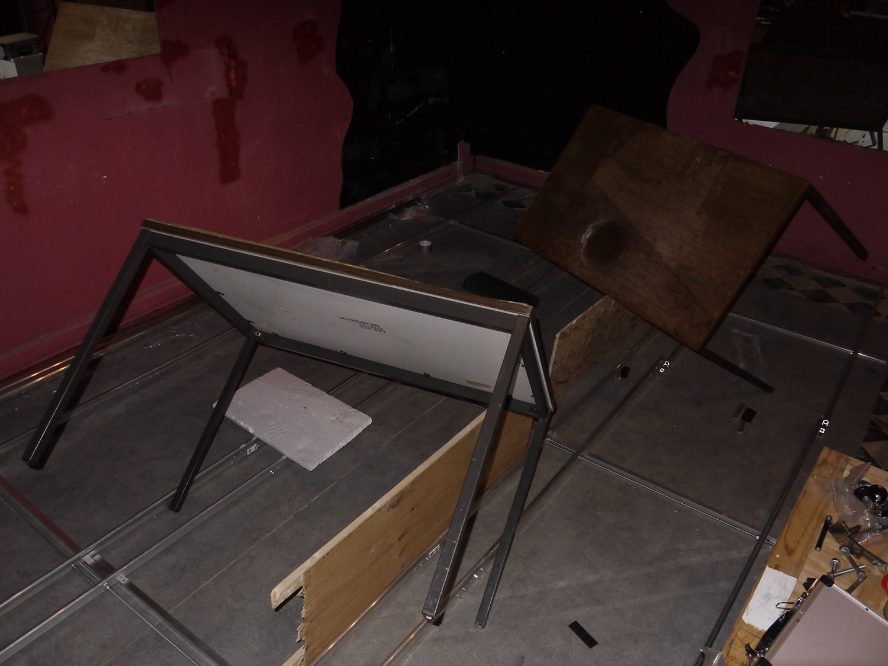
MB: Angles – the lines are really…
HC: It’s quite basic. But then also this is somehow mismatched, we don’t… This aperture contains a depth that’s not registered by the sky – or for me, anyway. But this is an old photograph. It’s something like ten years old. So it’s just also very easy, you know.
MB: This kind of reminds me a bit of Tony Smith sculptures.
HC: In the sense that the geometry has been distorted optically, or perspectivally.
MB: Yes.
HC: And that can’t be avoided because the camera is a single point view – I guess that’s the conceit of some Tony Smith works in that distortion is conditioned by a kind of orthogonal or diagonal relation that presupposes a single point of view, as opposed to the presence of the work in space. There’s something strange about the behaviour of orthogonals in camera, as opposed to in empirical space – in that in empirical space we can see when two things are straight, two lines 45º to the room, for example, and yet if you take a picture of it, then one of them will seem more oblique than the other, because the single point perspective distorts the relation; one is nearer to the camera than the other. I was also making things that corrected this. I had a score for a video with two treadmills, and they were both 45º to the room, but in the making of it I realised that they had to be 45º to the camera, not to the room. So actually they were over-corrected; their placement was effectively determined by their function within the image.
MB: Does it also have something to do with lenses?
HC: I don’t think so. There are different sorts of lens distortions, but it’s really depth perception – or the difference between looking at something with one point of view or two points of view simultaneously.
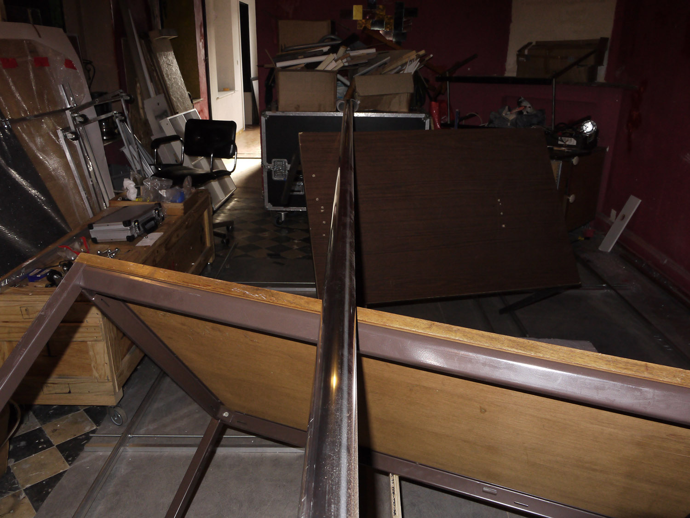
MB: Yes. So now we are moving – this is still in Germany?
HC: This is in London – again this is about ten years ago, this is on Walworth Road.
MB: And again there is a relation between the forms on sight, or…
HC: So obviously it’s like a found material, or found material relation.
MB: For me it’s more that something comes outside. The ground like this, it’s almost like a balcony. In the sense that the earth from inside is outside.
HC: It produces a sort of odd physics because it behaves as ground but it’s not flat. I mean even still here, walking down the hill, there are often these mounds of gravel with a ladder leaning against it or something, and it sort of… It’s a nice material to think about, I think because it upsets the normal relations.
MB: In a way one of the videos, where the chairs are moving all together…
HC: The one with the winch, in the bar.
MB: Yes.
HC: All the furniture is pulled in a loop.
MB: In the beginning, yes, and they’re all put together in one single mound of things.
HC: Right, there’s no discernible centre – it renders it ambiguous. It doesn’t have a compositional logic.
MB: But does it attract you because of the feeling of gathering things?
HC: I think in this photograph it was probably the relation of these two – this corrugated iron and this plank, strictly artificial, or rectilinear materials – or proto-rectilinear – and the non-rectilinear mound, and shadows. That even with very simple elements there’s a sort of density of relations. And of course then because they seem to be somewhat floating because of this mound, the physics of the mound – they’re not flat on the ground – they belong in some ways to the photograph. They don’t belong to the actual situation. This could be superimposed. Do you know these drawings by Lucio Fontana where he would draw the space and also draw the object that was contained by the space at the same time? So when the materials are freed of their physical… The expectation of their physical behaviour, or physical relations, that they somehow figure the image – or figure the photograph, or act in a reciprocal relation to the photograph rather than to the world.
MB: For me also mounds like this, they always have a psychological impact. You know starting from this Kurgan culture and mounds – basically burying sites, in a way.
HC: There’s something funereal about the mound.
MB: Yes.
HC: I don’t really have the same associations.
MB: Of course, that’s why I share it.
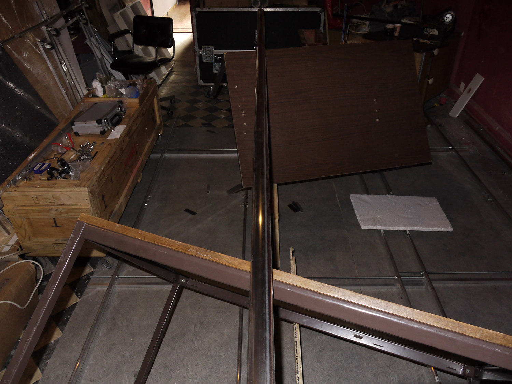
HC: The plank is doing the same thing, but on the surface of the water.
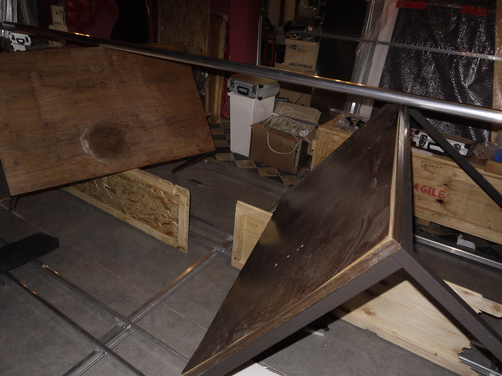
MB: The fence. This is a fence?
HC: It’s a handrail, yeah. This is ground floor obviously, but then there are these stairs down…
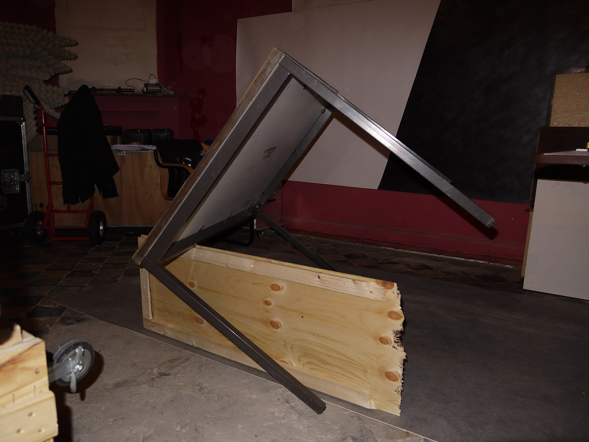
MB: Tell me about this photo.
HC: So this is taken in the kitchen in the same flat in Frankfurt, where we saw the photograph of the outside – so the window is just here. And I had this work that I called a public sculpture, which was two chairs – any two chairs – one placed at a right angle on the other one. And it is really only didactic – without any material of its own, it’s again a demonstration of something. It’s very easy to see how it doesn’t matter that it’s these chairs – the opposite of the ready-made conception where it’s this chair. So it was a physical direction, or a thing that could be done with chairs as a sculpture, essentially, without material. And I got a bit bored with it. So I was doing things like painting the chairs.
MB: The opposite colours are intentional?
HC: I had red, blue, yellow, white, black. But I was also putting them on stairs – so it would be painted and also in some sort of physical relation, that that to me was doing two things at once. So this is a photograph in a sense of two pieces of work, both these painted objects and this other sculpture idea, but in the same thing – two things at the same time.
MB: I feel that they have a living intention, as two objects. That’s something that I feel, there is a notion that still life regenerates or animates itself – like put in movement.
HC: Because they’re anthropomorphic?
MB: Maybe because of the gesture of one chair lying on top of another one. The logic of the movement and the position, it has this… Not anthropomorphic, but it has some sort of intelligence behind it.
HC: It’s a deliberate action. It’s signifying gesture.
MB: Yes, but I feel it doesn’t function as a sign of your intelligence, but there is something like… There is intelligence of the chair itself, in a way. That they have their own unique intelligence, and they decide, without human intervention, to do this.
HC: There’s a sort of material behaviour?
MB: Yes, some spontaneous material intelligence in a way. An intelligence of the form, I don’t know…
HC: So I made this gantry, to hoist things – to begin with, a chair, right, but then I also added things like a sack truck, and then very quickly when you have this aggregate, or this combination of objects, the physics of it exceed what’s really comprehensible.
MB: Yes.
HC: So when it reaches a certain degree of complexity, or even just basic physical relations, we can’t understand them sufficiently to represent them to ourselves. We can only really perceive them.
MB: For me it creates this quality of feeling basically of like the first molecules of non-organic molecules trying to find a way through some force or attraction to come together. And maybe at some point in trillions of years, it will start something organic, or something more complex. But there is this sort of attraction of the form itself, in between, which is constantly working for life.
HC: I mean I agree insofar as it’s without agency. You know, it’s not deliberate.
MB: We don’t know. (Laughs) I mean… Another thing is, when I stopped here, I thought how do you feel about it in relation to Joseph Kosuth’s chair?
HC: A bit like the inverse ready-made of reducing a chair to its semiotic function, that it’s named in various dimensions; I guess this is different because nowhere, other than in our speech commentary, do we need to identify it as anything – or this is already the role of the photograph. Kosuth would never be able to show a chair sideways, because placing it sideways would be the work. And then for someone like say Reiner Ruthenbeck, showing the furniture sideways is the work, showing the furniture on the floor sideways is the work, but for him he keeps the specific desk, the specific table – you can see them in Frankfurt and they are these desks and tables from 1971; although the work is dated by the MMK to 1993, its accession date – so in time the intentions diverge. I was more interested in the fact that they’re painted and they’re arranged – for me it’s more the perversity of the simultaneous arrangement and painting, not so much in the semantic properties of the furniture.
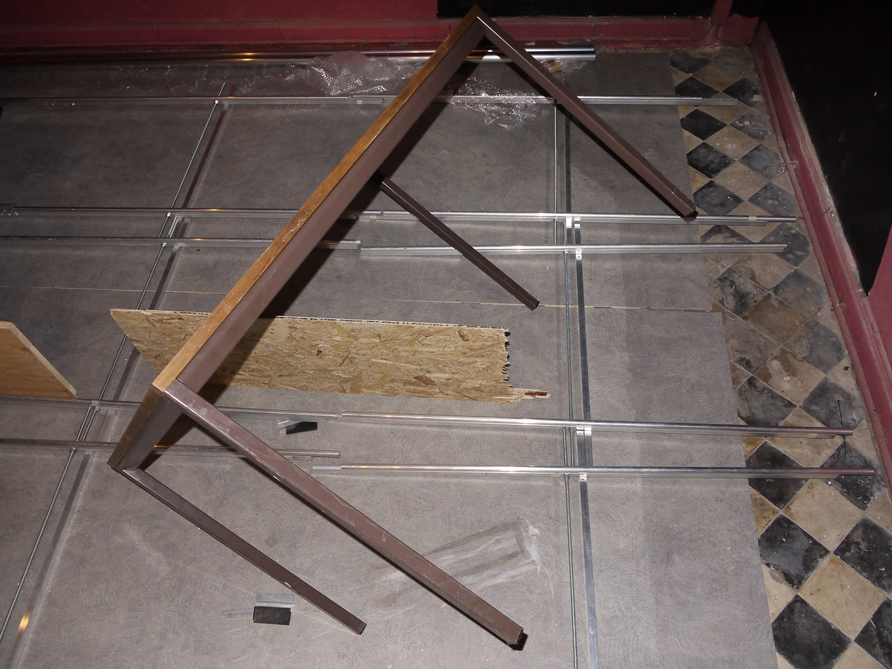
MB: Again, a kind of fence. I always feel this… That two sides are connected or strengthened by something in between. Two superposed…
HC: Opposites.
MB: Opposites, yeah or…
HC: Parallels.
MB: Two parallels.
HC: With some arbitrary thing…
MB: Yes.
HC: I used to think this about photographs. I wouldn’t photograph people, but I would like there to be some trace of someone leaving a frame or something. I feel like this is to do with sculpture, basically. That it really is all… That this arbitrary action is really for scale. It’s also a bit like the furniture.
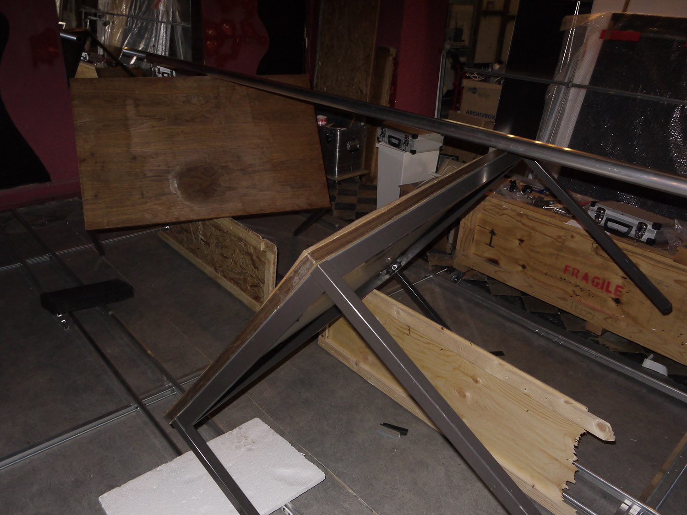
MB: This.
HC: This is old, again. That’s a bit of taxi cab, which I brought on the central line from Essex to St. Martins in central London.
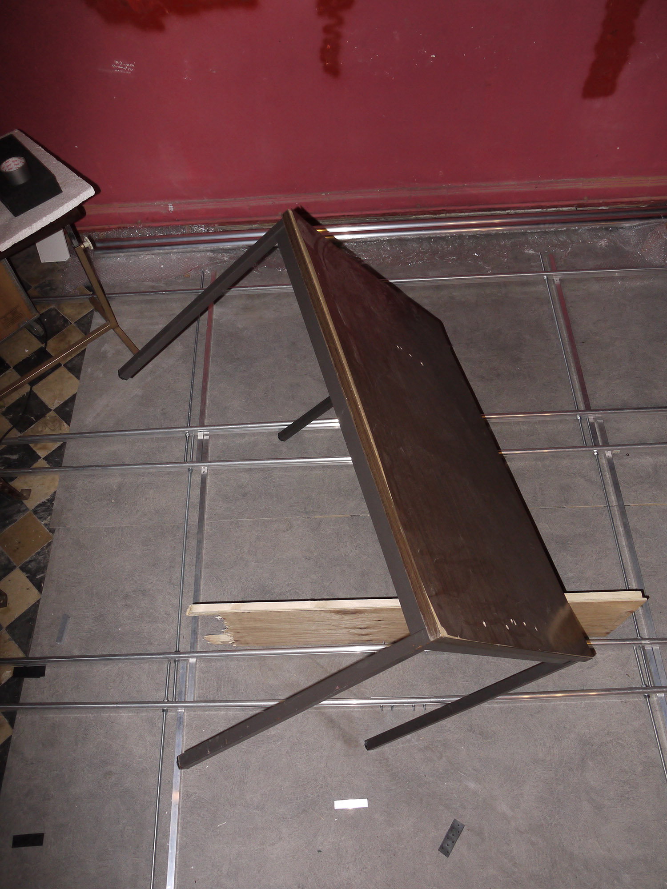
MB: This is a set up for a video or…
HC: Yeah. So this is a score – it’s a set of instructions, basic instructions, for making a video, which in this case uses two cameras. And it can be made in any space. So the parameters that produce the video are independent of things like the size of the room or the lighting conditions, or even to an extent the type of camera, and the speed of the movement. So in this case there are two tracks and they’re parallel, but oblique to the room.
And this one was a two part thing. There is one where the cameras face each other, and stay parallel, and the movement on the tracks is oblique. And then there’s one where the camera is perpendicular to the track, which means that the cameras are off-set relative to one another. If you imagine this setup is symmetrical. So we’re seeing one track, but there’s another track with another camera on it.
MB: Okay.
HC: And so then I was interested in the geometries of the behaviour of the relative movement, according to whether the cameras are parallel, and in the middle of the frame, or perpendicular, and so off-set. And in both cases, even though this change is very slight, there’s this quite big difference in the apparent movement relative to the space. But I also made this again facing the other way – there’s a big window here – where I was also on the platform. So that was not a score, it was a one-time video. And I think that I felt the need to demonstrate the equivalence between the camera and a sort of incapacity. The way I was thinking of this sort of work was that it produced itself, really.
MB: So the only parameter that is fixed with regards to the construction is duration of the video, probably?
HC: No, the duration is determined by the speed of the movement.
MB: There’s a motor or…
HC: There’s a winch powered by a car battery.
MB: And it’s all the time the same speed – so no matter which space you put it in, it will make a more or less similar duration?
HC: It depends on the length of the track.
MB: So the length is also arbitrary?
HC: Yes. But for example in a room that is twice as big, with a track twice as long, the video would be twice as long in duration. But the movement would appear slower, because the room is bigger. So in order to have the same movement in a bigger space you would need to double the speed. The thing that remains constant is the video camera recording and playing back at the same speed. That would be constant for all these situations. But certainly there’s this kind of problem in the possibility of changing the speed, of the physical movement relative to the scale, or relative to the size of the room. And I always decided to keep the speed fixed, because it was enough that it didn’t… I didn’t want to change it to produce an effect. It was enough to keep a fixed relation.
MB: You know how I see it, the work is in relation to the constraints of the physical space around it. It reminds me of some sort of medium, like a gas for example, filling the room; it always does it with the same speed. The medium itself has a physical property, only if you boost it up will it be quicker. it can be any gaseous medium coming into a room, or it can be a drop of some liquid substance into water – but it will always have the same speed of diffusion throughout the medium. Eventually it will diffuse completely. So I have the feeling that the video here is going to diffuse itself throughout the room – it’s going to adapt to it, but the idea is to be everywhere, to go from wall to wall.
HC: I have to approach this from a slightly roundabout way. There was always a problem with these score videos in that realisation was never perfect; the camera would sometimes shake a little bit, or the speed is never exactly matched…
MB: But it’s the physics of the medium.
HC: Yeah, yeah, and it didn’t bother me, because it was still an index of its production. But the thing that happened – again, a bit to go back to the sculpture with the chairs – was that it became clear physical relations are immanent. So even though it would be determined by physical relations which become apparent in time, because it’s video, actually those physical relations are…
MB: So it works as a sculpture first… Not a sculpture, but a physical relation.
HC: Yes. And in this instance there is a need for video to record the physical relations which happen in time, because the movement is linear, according to these tracks and so on. And I used to think about this, that I was doing… I liked doing performance because I wanted to investigate simultaneity in real space, simultaneous processes in empirical space – or that’s what I thought I was doing; it wasn’t necessarily apparent to people who saw the performances – and then I liked the video cameras because in a sense they had the same material as the performance – they were simultaneous processes – but they documented themselves. It didn’t require a performance to instantiate the relation, because the cameras, insofar as they were recording at the same time, were already documenting and indexing their relation just through filming in the same space. So it was like performance but it documented itself. And now I think it’s very simple to me that instead of needing to have this thing demonstrate itself in time, to have these relations demonstrate themselves in time as video, that objects, produced objects, already index these relations – physical relations are immanent to any situation, and indeed perhaps to photographs or to video, insofar as it’s not edited within the frame.
MB: And thinking about the photo here, it’s a point of view… It’s a point of view of another object in relation, or it’s a subjective point of view? This is not a camera…
HC: It’s central to the room. So these photographs have the function for me of showing myself how I see it. So I was always thinking of this track as relative to the room…
MB: You said that there was another… This is not taken from a camera on a rail.
HC: No, this is a stills camera. So the photograph is taken is a normal camera, and then there is a video camera set up in a symmetrical relation behind where this… Or more or less where this photograph is taken from. But I wanted to show, for myself really, as a form of note-taking, the relation of the track to the room, and the position of the camera. As a kind of record for myself of scale or arrangement.
MB: But it’s also part of the work?
HC: The photograph is not the work, it just records the process of making the work. And in a way it’s helpful for me, to understand for myself what I was doing at any time. A bit like making drawings.
MB: Okay.
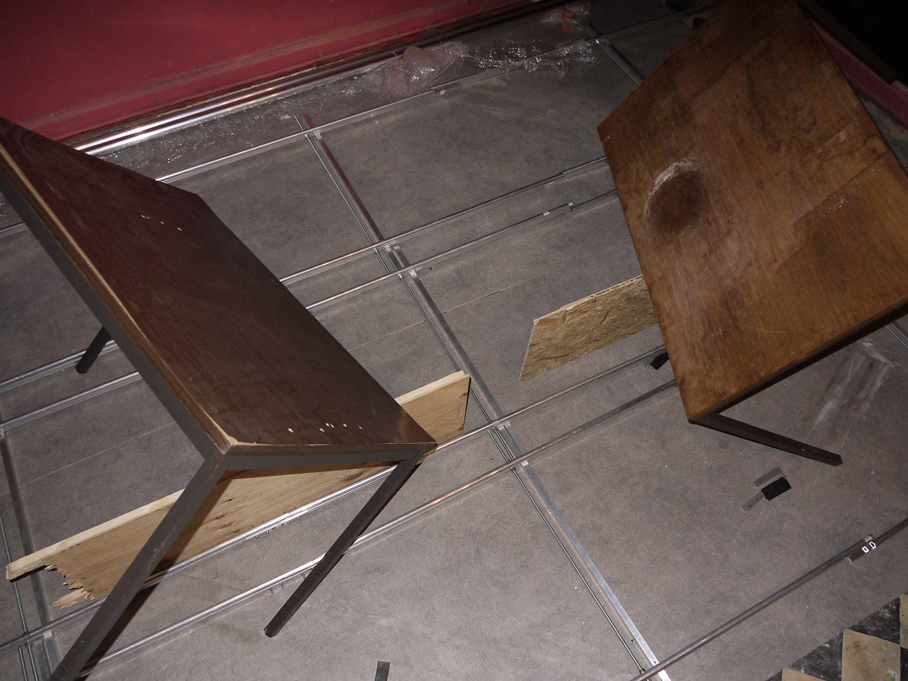
HC: This one.
MB: Yes.
HC: So this is really the same as the taxi cab thing, this is first year of St. Martins – I did a foundation year before that, and then this is the first year of the BA. And I was taking a lot of pictures, but experimenting with what I was taking pictures with. And just before this I took a lot of films where I just labelled the roll of film and didn’t develop it. So I had a roll of ceilings and a roll of floors, and some others. And then I would just write the label of what the thing was, on the roll of film as an object, instead of having the pictures. But I still went through the motions of taking all the pictures. And then I did the opposite, which was this slide film, where I would take nice slide pictures of things, and then had them developed, and mounted them as slides and projected them. So this is a photograph of a projection of my slide film – so it’s a photograph of a projection of a photograph that I took.
MB: Yes.
HC: And there was snow in London, and I think I took this because of the ramps, and then also because obviously where the car was there’s now no snow. There’s also this opacity to the foreshortening that happens because of the snow. So in some ways it’s entirely pictorially determined – it’s a pictorial photograph, like most would be.
MB: But I asked you because I felt this comes from really when you were younger. And there is some really suggestive time perspective here, as these angles and objects which we can recognise interest for – like mounting or… Like a group of objects, a relation between objects and… It just comes at the complete top – so if you put it in a time perspective, it’s like you see that you need to walk towards it.
HC: Still caught up with all this picture in the foreground.
MB: You have to go over the snow of London first.
HC: But it could also be decline, right – it could also be sinking to the…
MB: Yes.
HC: Obviously the romanticism of the picture is conditioned by the slide film – so in a sense it’s performative; I was taking pictures because I had slide film in the camera, and because they were the conscious opposite of these undeveloped things. But I developed those rolls, the labelled rolls, last year, because I wanted to see the images.
MB: And were you surprised or…
HC: There was one thing which was extremely surprising, which was that I’d… Some time a bit later, two years later, I went to take a picture of a specific tree, of a particular type of tree – and I was looking around in central London for this type of tree which would be generic, a bit like the chairs. So I wanted this generic picture of a particular type of tree. And I found it and printed this photograph and printed it and stuck it behind a door, and this was a piece of work. And then looking on this roll of film there was exactly the same picture, which I’d taken a year and a half earlier, but had never developed. So it was like I’d registered, I’d remembered the process of taking that picture to the extent that I wanted to repeat the picture, but without the picture – without the evidence to myself that I’d taken it.
MB: You felt like you were doing it for the first time.
HC: Yes. But it’s also to do with intention, it’s that I’m not sure that my intentions are ever totally registered in exactly what I happen to be doing, it’s always somewhat backwards. The making of any idea is always a ruse to produce the material, which comes later, to an extent. You can have some idea of what you want to do, and it might do that more or less, but it also is a record of other things.
MB: There is a nice David Lynch insight into the way he works; he said what comes first for him is always an idea, which starts haunting you in a way – that doesn’t want to leave your thoughts easily. And you first meet this idea – so it’s like a separate entity to you; you put yourself in relation to this idea and then you get to understand, to struggle as you make it, you see what happens, and then when its ready enough you decide what to do with it.
HC: He has to direct people. So there’s perhaps a certain amount of mystique…
MB: Not only, I think he meant it for all kinds of work he does – also drawings and animations, and music.
HC: But I’ll try to be really precise – the problem is that whereas for him the idea of a sort of haunted image serves to reify his own subjectivity, the thing that interests me is that the material is produced by the work, independent of my subjectivity. So it’s not that I’m the somehow… I’m not the target of all of this activity, it’s the opposite.
MB: Yes, but we come to this notion of attributing intelligence to…
HC: Yeah, sure. And there’s this German romantic philosopher Novalis who talks about Urhandlung, as the potentiality of matter to condition itself, as opposed to producing or affirming subjectivity. And I like this, but the reason perhaps he’s a romantic philosopher is because in this way the concept precludes its own content.
MB: It brings me to this observation that Donna Haraway has about the relation between object and subject. I think she mentioned it in the context of cyber feminism – and artificial intelligence, what is real, what is stimulated intelligence. But she said it’s not important if the object we are looking at is real or not, the question is are we real or not.
HC: But again, I would say that’s a kind of mystique.
MB: I think her idea was to move away from discussion of duality – to find a way to move outside of these dual norms, which she considered to be a characteristic of society.
HC: In some ways I also believe that it’s not that the things can be legitimated by this way of approaching it, but rather that the things do not express an intention directly, or if they do, that I think that’s secondary to their behaviour, both with regards to how I think about them, or with regards to how other people might chance to think about this work. And although I wouldn’t go so far as to say that any reaction to my deliberate intention is my material – I don’t think the reaction of an audience is the material – but equally I don’t think that the things are solely conditioned by my intention. A bit like the tree on the film. I’m just not able to always… I mean maybe no one is. It would be absurd to assume that the things were an illustration of a will only.
MB: Yes, of course.
HC: Maybe that’s a bit optimistic. Maybe it is only an illustration of a will, but any reaction, including my own, already exists in a different situation.
MB: I ask you this because when we look at these slides, for me there is really this feeling of interest in clear relations, positions, perspectives, for physical qualities; I don’t feel any metaphysical questions about; you are not posing a question of the origin of things.
HC: As a narrative?
MB: As extra information about the thing, which can really slide into strict direction of a concept or metaphysics or… You’re trying to deal basically with a situation. There is something really about situation.
HC: I think it’s to do with available material. I wonder whether it’s ever possible to make things beyond the immediate relation. I mean certainly people have – with a studio that can produce things, or where the realisation would be outsourced to a different place. But I wonder if that denies the possibility of any negative experience. If you say outsourced to someone to make anodized aluminium boxes, you would deprive yourself of the possibility of having the negative experience of that work, not only the labour; you’re only conditioned by its positive result – or your experience is coextensive with its display, you equate yourself with its audience, as a sort of miracle or something.
MB: Have you ever been part of a group of artists working together?
HC: I’ve been lucky in that I’ve had good conversations with people over quite a long time – both at St. Martins and more recently in Frankfurt.
MB: So for you it’s more a discussion, an intellectual exchange.
HC: Of course.
MB: Because it’s quite a specific matter, and I myself I always have to make a decision of who to start to speak to about work.
HC: I like this idea of situation – that it’s a sort of deliberate action and thought within any given situation, and a sort of productive activity. It’s proactive.
MB: So you are more on the side of action?
HC: Yes.
MB: It’s like you’re more concerned about what is… You’re not concerned about some dogmas or norms which are circulating around the things that you’re working on. You’re determined to understand better the things which concern you, which interest you.
HC: Yes.
MB: Which is liberating – that’s what I found, in your work, there is really something you manage to transmit, to viewers like me to whom you show this, there is this kind of… It’s liberating in a way. Because it’s really about the… It’s free of norms, free of dogma, free of trends.
HC: But it’s also reductive to think only about material and situations.
MB: It’s not only, because this I think is already so complex, that we even don’t know what it is. It’s difficult even to say what the situation is. This time relation is so complex – physically already. You don’t need a cultural argument to add to it.
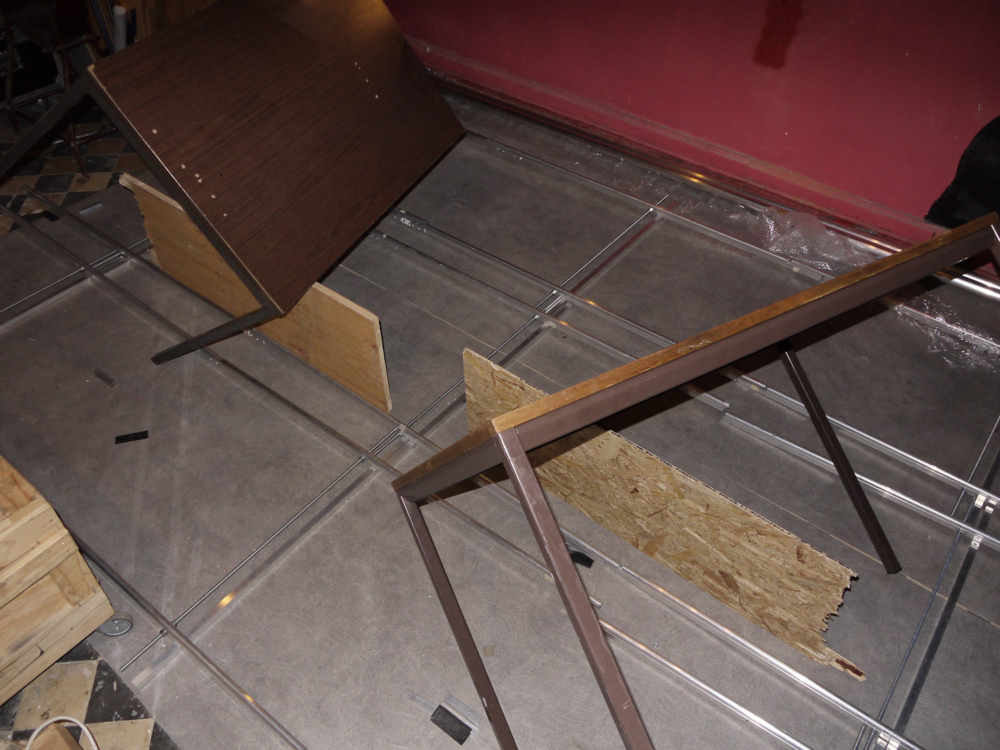
MB: This photo is taken somewhere in the east of Europe or…
HC: No, this is taken in Soho Square, in London. I don’t know where the car is from, maybe the car is from Eastern Europe.
MB: Because you know what is…
HC: It’s nice, it’s the same colour.
MB: I really see the pattern, the cultural pattern of Eastern Europe, it means that you fix your things – you fix things yourself, as much as it makes sense.
HC: I think it’s because it’s silver tape obviously, on a silver car – that’s why I took the photograph.
MB: But that’s why the owner bought a silver car…
HC: Because it’s the same colour as the tape.
MB: He knew in the case that he could use the silver tape, which is standard tape. I mean you have a black version I think also, but you don’t have other colours. He knew that he would be able to repair it.
HC: That’s beautiful. We should stop there.